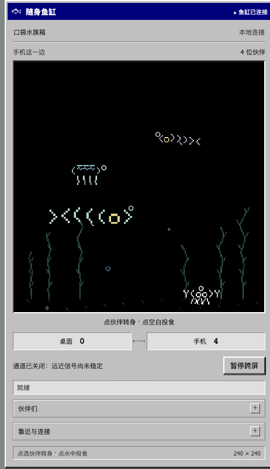

让小鱼游进手机。
一个由键盘符号组成的桌面鱼缸。先给开发板烧录，再用手机连接它的本地热点。
支持硬件：ESP32-S3 N16R8（16MB Flash / 8MB OPI PSRAM）与 ST7789 SPI 240×240。请先按下表接线，使用电脑 Chrome / Edge 和 USB 数据线。iPhone 可以玩鱼缸，不能用这里的 USB 烧录。
当前浏览器不支持 Web Serial，请换电脑 Chrome / Edge，或下载固件用 esptool 烧录。请使用 HTTPS 打开此页面。下载固件
首次安装可清空旧数据。更新现有鱼缸时取消“清空设备”选项以保留生物归属。这里不会自动开始烧录，需你选择设备并确认安装。
接线
| ST7789 屏幕 | ESP32-S3 |
|---|
| GND | GND |
| VCC / BL | 3V3 |
| SCL / SCK | GPIO12 |
| SDA / MOSI | GPIO11 |
| RST / DC / CS | GPIO8 / GPIO9 / GPIO10 |
安装之后
- 等待开发板启动，手机连接 PocketReef，密码
Reef-258614。 - 手机打开 http://192.168.4.1/ 并保持前台。这个热点不提供互联网。
- 实体屏幕放左边，手机放右边。靠近打开通道，谁游到边缘谁跨屏；点击伙伴转身，点空白撒食。
靠近由 Wi-Fi 信号估计，不是精准触碰或厘米级测距。更新后请刷新手机网页。

实际网页截图 · 本地演示数据，非实物照片。
源码、完整说明与问题反馈 · ESP Web Tools
V30 · MIT / 第三方依赖遵循各自许可 · 无云服务